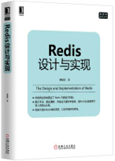

Redis设计与实现¶
欢迎来到《Redis设计与实现》的读者服务网站！
《Redis设计与实现》一书全面而完整地讲解了 Redis 的内部运行机制， 对 Redis 的大多数单机功能以及所有多机功能的实现原理进行了介绍， 展示了这些功能的核心数据结构以及关键的算法思想。 通过阅读本书， 读者可以快速、有效地了解 Redis 的内部构造以及运作机制， 从而学会如何更高效地使用 Redis 。
你可以通过访问本站， 或者关注本书作者的微博、twitter和豆瓣来获知本书的最新消息。
购买¶
内容与特色介绍¶
本书介绍了以下内容：
字符串（string）、散列（hash）、列表（list）、集合（set）和有序集合（sorted set）这五种类型的键的底层实现数据结构。
Redis 的对象处理机制以及数据库的实现原理。
事务实现原理。
订阅与发布实现原理。
Lua 脚本功能的实现原理。
SORT命令的实现原理。BITOP、BITCOUNT等二进制位处理命令的实现原理。慢查询日志的实现原理。
RDB 持久化和 AOF 持久化的实现原理。
Redis 事件处理器的实现原理。
Redis 服务器和客户端的实现原理。
复制（replication）、Sentinel 和集群（cluster）这三个多机功能的实现原理。
本书的特色是：
带有丰富的图示和表格， 帮助读者更好地理解书中的知识点。
关注功能的高层设计思路而不是底层的实现代码， 让读者无须花时间研读代码就可以了解到 Redis 的内部实现。
提供带有中文注释的 Redis 源码， 帮助有需要的读者做进一步的学习。
查看目录并试读¶
《Redis 设计与实现》全书共有 388 页，分为 4 个部分，共 24 章。
以下目录中可点击的为试读内容。
第一部分：数据结构与对象
第二部分：单机数据库的实现
数据库
RDB 持久化
AOF 持久化
AOF 文件的载入与数据还原
AOF 重写
事件
客户端
服务器
第三部分：多机数据库的实现
复制
Sentinel
获取主服务器信息
获取从服务器信息
向主服务器和从服务器发送信息
接收来自主服务器和从服务器的频道信息
检测主观下线状态
检查客观下线状态
选举领头 Sentinel
故障转移
集群
第四部分：独立功能的实现
发布与订阅
事务
Lua 脚本
Lua 环境协作组件
EVAL 命令的实现
EVALSHA 命令的实现
脚本管理命令的实现
脚本复制
排序
ALPHA 选项的实现
ASC 选项和 DESC 选项的实现
BY 选项的实现
带有 ALPHA 选项的 BY 选项的实现
LIMIT 选项的实现
GET 选项的实现
STORE 选项的实现
多个选项的执行顺序
二进制位数组
位数组的表示
SETBIT 命令的实现
BITCOUNT 命令的实现
BITOP 命令的实现
注释源码¶
为了帮助有需要的读者进一步了解 Redis 的实现细节， 本书附带了一份包含详细中文注释的 Redis 3.0 版本源码可供参考： https://github.com/huangzworks/redis-3.0-annotated 。
相关资源¶
《如何阅读 Redis 源码》 —— 文章给出了一个推荐的 Redis 源码阅读顺序以供参考， 读者可以在阅读完本书之后， 根据文章描述的顺序来尝试阅读源码， 从而进一步提高对 Redis 的了解。
《Redis 设计与实现》图片集 —— 展示了本书包含的绝大多数图片以及图片的源码， 方便读者在写博客、记笔记或者做演讲稿时引用本书的图片， 或者通过阅读图片的源码来学习 dot 语言和 Graphviz 图片生成工具。
旧版《Redis 设计与实现》 —— 本书的上一版， 介绍了 Redis 2.6 的内部运作机制和单机功能。 要了解本书和旧版之间的区别， 请阅读 《Redis 设计与实现》新旧版本详细对比 页面。
勘误¶
勘误信息 页面列出了本书已确认的勘误信息， 请读者在阅读本书之前， 根据这些信息对书本进行校正， 由此带来的不便作者深感抱歉。
如果读者发现了勘误页面目前尚未记录的新错误， 可以在本页面的 disqus 论坛进行反馈， 又或者通过 huangz.works 页面展示的任意一种联系方式来联系作者。